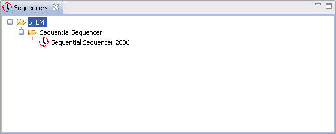

The Sequencers view displays the Sequencers that are available for use in Scenarios. The available Sequencers are organized in a tree. Those listed under "STEM" are built-in to STEM.
The view supports "drag" such that a Sequencer can be dragged from this view and "dropped" into an open Scenario editor.
